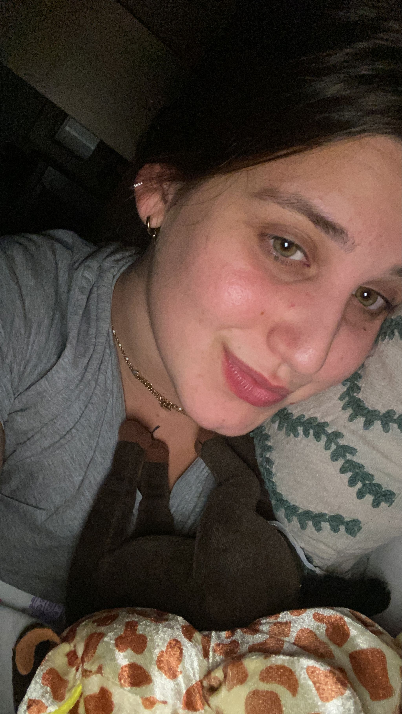

¿Por qué tú?
Para liarte con alguien seguramente valga cualquiera, pasas un momento bueno con esa persona y si te vi no me acuerdo. Seguramente a mucha gente eso le llena y le parece que con esta edad eso es ser guay. Cuando te llega una persona que hace que todos los momentos sean buenos sean íntimos o no pues no te hace falta nada más para ser feliz. Contigo Llara todos los momentos son buenos, mágicos e inolvidables incluso estando a muchisimos Kilometros me haces reir y sentir especial, por eso eres tú. Eres tú porque contigo soy yo. Eres tú porque sacas la mejor versión de mí. Eres tú porque me haces madurar y evolucionar. Eres tú porque me aceptas tal y como soy, no me intentas cambiar solo intentas que mejore y evolucione. Eres tú porque en vez de decirme que todo bien me dices cuando me equivoque para que me de cuenta de las cosas. Eres tú porque me entiendes como no me entiende mucha gente y sabes lo que me pasa con mirarme. Eres tú porque cuando discutimos en vez de gritarnos y echarnos mierda tratamos de hablar las cosas y solucionarlas civilizadamente. Eres tú porque eres preciosa, agradable, maja, cariñosa, sensible, atenta, listisima y super buena persona. Eres tú porque aparte de tenerme enamorado a mí tienes enamorado a toda mi familia. Eres tú porque te prefiero a ti a miles de Kilometros y estando mucho tiempo sin ti que a cualquier otra a 1cm. Por todo eso y muchas cosas más eres tú y no cualquier otra. Te quiero por ser tú como eres.💖
